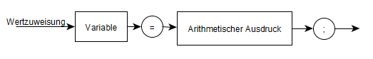
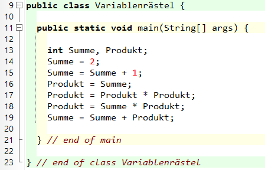

Wertzuweisungen sind wichtig um Daten abzuspeichern. Das Variablenrätsel soll sicherstellen, dass du Wertzuweisungen richtig verstanden hast. Damit du für das Rätsel gut gerüstet bist, gibt es vor dem Rätsel eine kurze Beschreibung der Zuweisungen:
Wertzuweisungen
. Eine Wertzuweisungs sorgt dafür, dasseine Variable einen Wert erhält
, beziehungsweise das der bisherige Wertgeändert
wird. Bei der Wertzuweisung KostenGesamt = KostenSMS + KostenMMS; wird also zunächst dieSumme
berechnet und dann der Wert in der VariableKostenGesamt
gespeichert.Der allgemeine Aufbau einer Wertzuweisung lässt sich als Syntaxdiagramm wie folgt darstellen:

rechts
nachlinks
ausgewertet.Die Aufgabe der heutigen Stunde ist das Variablenrätsel! Dazu schauen wir uns mal die Aufgabe genauer an und versuchen durch reine Mathematik die Ausgaben des Programmes zu ermitteln.
Bestimme welchen Wert die Variablen nach den einzelnen Schritten ab Zeile 13 haben.
Erstelle nach Lösung dein eigenes Variablenrätsel!

"3"
und Produkt =undefiniert
"3"
und Produkt ="3"
"3"
und Produkt ="9"
"3"
und Produkt ="27"
"30"
und Produkt ="27"